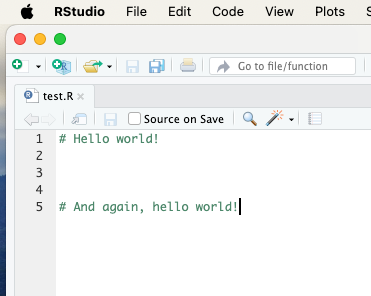
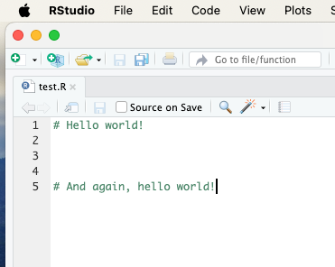
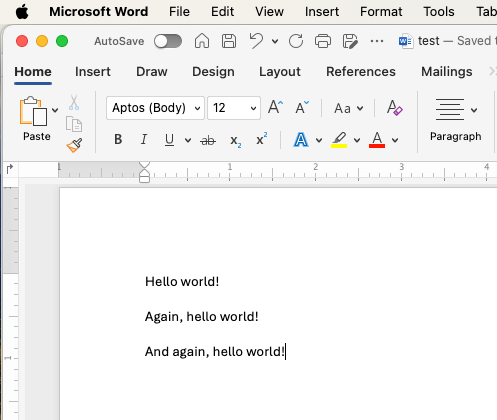

5 Korjausmetodi 1: merge-toiminto

Edellisessä luvussa tarkastelimme tilannetta, jossa kaksi käyttäjää samanaikaisesti teki muutoksia samaan commit-tilanteeseen C0 ja yritti työntää omat commitinsa etähakemistoon. Tässä luvussa näemme, mitä tapahtuu, kun käyttäjä asettaa Gitin konfiguraatiot siten, että pull-komento pyrkii automaattisesti yhdistämään (merge) muutokset.
Tarkastelemme tilanteen etenemistä etenkin Käyttäjän 2 näkökulmasta.
5.1 Pull ilman merge-lupaa
Vaihe 1: Käyttäjä 1 ja Käyttäjä 2 tekevät pull-komennon (C0)
Molemmat käyttäjät aloittavat projektin samasta lähtötilanteesta. He tekevät pull-komennon ja päivittävät paikalliset hakemistonsa commit-tilaan C0.
Tämän jälkeen he aloittavat tiedoston test.R työstämisen. Se näyttää pisteessä C0 kaikille käyttäjille tältä:

Kuva. Alkutilanne commit-pisteessä C0.
Vaihe 2: Käyttäjät 1 ja 2 muokkaavat tiedostoa kukin tahollaan
- Käyttäjä 1 on muokannut tiedostoa ja työntänyt jo sen etähakemistoon.
- Käyttäjä 2 niin ikään on muokannut tiedostoa, mutta ei ole vielä työntänyt sitä etähakemistoon.
 

Kuva. Käyttäjä 1:n tekemät muutokset jo etähakemistossa (vasen kuva), Käyttäjä 2:n tekemiä muutoksia ei ole vielä pushattu (oikealla). Käyttäjien tekemät muutokset poikkeavat toisistaan selvästi.
Vaihe 3: Käyttäjä 2 yrittää pushata tekemiään muokkauksia etähakemistoon
- Käyttäjä 2 yrittää ensin tehdä pull-komentoa, mutta tämä epäonnistuu:
Video. Ensimmäinen - ja epäonnistunut - pull-yritys.
- Käyttäjä 2 yrittää tehdä commit + push -komentoa, mutta myös tämä epäonnistuu:
Video. Myös commit + push epäonnistuu.
- Käyttäjä 2 tekee uudelleen pull-komennon ja saa seuraavan virheilmoituksen ohjeineen:
Video. Uusi - epäonnistunut - pull-yritys.
- Käyttäjä 2 kopioi leikepöydälle Gitin antamasta ohjeesta seuraavan komennon:
git config pull.rebase false

Video. Pull-yrityksestä leikepöydälle kopioitava käsky.
5.2 merge-luvan antaminen
Ennen kuin Käyttäjä 2 tekee kolmannen pull-yrityksen, hän ajaa Terminalissa komennon
antaakseen Gitille luvan yrittää merge-toimintoa, kun uusia muutoksia vedetään etähakemistosta.
Komennon ajaminen Terminalissa tapahtuu seuraavasti:
Video. Komennon git config pull.rebase false ajaminen Terminalissa.
5.3 Pull merge-luvalla
Nyt Käyttäjä 2 voi onnistuneesti tehdä pull-komennon, joka luo uuden yhdistämiscommitin. Se kuitenkin tuottaa varoituksen, joka käskee varmistaa, että yhdistäminen on ollut onnistunutta:
Video. Kolmas pull-yritys onnistuu.
Seuraavaksi Käyttäjä 2:n tulee varmistaa testitiedostoa test.r muokkaamalla, että merge on onnistunut.
Video. Tiedosto test.R tulee muokata manuaalisesti kuntoon merge-toiminnon jälkeen.
Tämän jälkeen commit + push -toiminnot menevät läpi ongelmitta:
Video. Commit + push -toiminnot menevät läpi etähakemistoon.
Nyt tiedosto test.R näkyy Käyttäjä 2:n päivittämässä muodossa GitHubissa:
Video. Mergen läpikäynyt tiedosto näkyy nyt etähakemistossa GitHubissa.
5.4 Binaariset tiedostot
Binaariset tiedostot ovat tiedostoja, jotka sisältävät tietoa muodossa, jota ei voida suoraan lukea tai muokata tekstieditorilla. Esimerkkejä binaarisista tiedostoista ovat esimerkiksi Word-asiakirjat (.docx) ja bittikarttakuvat (esim. .png). Näitä tiedostoja ei voi yhdistää merge-toiminnolla Gitissä, koska niiden sisältöä ei voida tulkita yksinkertaisena tekstinä, ja pienetkin muutokset tiedostossa voivat aiheuttaa suuria eroja binäärisessä rakenteessa.
Vaikka asetat Gitin käyttämään git config pull.rebase false varmistaaksesi yksinkertaisemman vedon (pull), se ei auta ratkaisemaan binaaristen tiedostojen yhdistämistä. Kun kaksi käyttäjää tekee muutoksia samaan binaariseen tiedostoon eri commit-tiloissa, syntyy tilanne, jonka ratkaiseminen vaatii järeämpiä konsteja.
5.4.1 Esimerkkinä .docx
Vaihe 1: Etähakemiston tilanne (C0)
Kaikki käyttäjät aloittavat tilanteesta, jossa test.docx on commit-tilassa C0 ja näyttää seuraavalta:

Vaihe 2. Käyttäjä 1 ja käyttäjä 2 tekevät omat muokkauksensa samaan Word-tiedostoon:

Kuva. Käyttäjän 1 muokkaukset.

Kuva. Käyttäjän 2 muokkaukset.
Vaihe 3: Käyttäjä 1:n muutokset hyväksytään
Käyttäjä 1 ehtii tekemiensä muokkausten jälkeen ennen Käyttäjä 2:ta tehdä commitin C1 ja push-komennon, ja commit C1 hyväksytään etähakemistoon, koska se perustuu suoraan commit-tilaan C0.
Vaihe 4: Käyttäjä 2:n muutokset hylätään
- Käyttäjä 2 yrittää tehdä test.docx-tiedostoon tekemiensä muokkausten jälkeen commitin
C2.
- Git kuitenkin estää push-komennon, koska etähakemisto on siirtynyt commit-tilaan
C1. Tämä aiheuttaa ristiriidan.
- Käyttäjä 2 ei siis pysty suorittamaan commit-, push- tai pull-komentoja.

Kuva. Käyttäjä 2 ajautuu jumiin Gitin kanssa. Commit-tilaa C1 ei pysty hakemaan pull-komennolla, eikä commit-tilaa C2 pysty siirtämään commit-tilan C1 päälle.
Vaikka Käyttäjä 2 antaisi komennon git config pull.rebase false ja yrittäisi sen jälkeen pull-toimintoa, Git ei voisi yhdistää kahta eri versiota test.docx-tiedostosta, koska kyseessä on binaarinen tiedosto.
5.5 Yhteenveto
git config pull.rebase false on oikeastaan parhaimmillaan tilanteissa, joissa käyttäjät eivät varsinaisesti ole muokanneet samaan aikaan samaa tiedostoa, vaan ovat unohtaneet tehdä pull-komennon ennen kuin tekevät hakemistoon muokkauksia. Tällöin commit-pisteiden välisten ristiriitojen ratkaisu on Gitille melko helppoa.
git config pull.rebase false ei sen sijaan ole kovin tehokas ratkaisu tilanteisiin, joissa käyttäjät ovat todella muokanneet samaa tiedostoa samanaikaisesti. Tällaisissa tapauksissa syntyneet ristiriidat vaativat yleensä vähintäänkin manuaalista yhdistämisen muokkailua.
Binaaristen tiedostojen kohdalla git config pull.rebase false -tyyppinen muokkausten yhdistäminen ei toimi lainkaan. Koska Git ei voi yhdistää binaaristen tiedostojen sisältöä, kaikki tällaiset ristiriitatilanteet täytyy ratkaista muilla tavoilla, esimerkiksi valitsemalla jompikumpi versio tiedostosta.
Käsittelemme viimeksi mainittua seuraavassa luvussa.
Divergent Git branches - ongelmasta ratkaisuun © 2025 by
Ville Langén is licensed under the CC BY-SA 4.0.